E-commerce
PROJECT 01 · E-COMMERCE UX
보여주는 방식이 신뢰를 바꾼다: 온라인 리뷰 속성 시각화 설계와 검증
온라인 리뷰의 핵심 속성을 시각적으로 구조화하면, 소비자의 신뢰와 구매 의도는 어떻게 달라질까요?
PERIOD
2025.09 – 2025.12
ROLE
팀 리더 (4인 팀)
MY PART
주제 제안 · 실험 설계 · 분석 방법 제안 · 가이드라인 정리
WITH TEAM
기획 · 아이디어 정리 · 리서치
TOOLS
Figma · FigJam
PAPER
한국HCI학회 2026 · 제1저자 · 게재
Chapter 01
배경과 문제
01 · Background
리뷰는 많은데, 왜 믿기 어려울까요?
AI 자동 생성 리뷰와 조작 리뷰가 늘면서, 소비자가 리뷰의 진위를 직접 판단해야 하는 상황이 되었어요. 플랫폼은 인증 배지와 검증 시스템을 도입했지만, 리뷰 화면은 여전히 텍스트 중심으로 구성되어 있어요. 그 결과 신뢰 판단에 필요한 정보를 얻으려면 긴 본문을 읽어야 하고, 인지적 부담이 커져요.
리뷰를 믿기 어려운 이유
가짜 리뷰의 증가
조작 리뷰와 AI 자동 생성 리뷰가 늘고 있어요
조작?
AI 생성?
광고?
믿음으로 이어지지 않는 신뢰 단서
구매 인증 배지, 리뷰어 정보 등 개별 단서는 늘었지만, 신뢰감을 전달하는 정보 구조는 부족해요
김리뷰
★ 4
구매 인증
30대
지복합성
텍스트 중심의 리뷰 화면
제품 적합성을 판단하려면 결국 긴 리뷰 본문을 읽어야 해요
더보기 ⌄
그로 인해 생기는 문제
"다 칭찬뿐인데, 광고 아니야?"
조작 리뷰가 섞여 있어 진위를 가려내기 어려워요
"인증은 됐다는데, 믿어도 돼?"
배지와 리뷰어 정보는 제시되지만, 신뢰할 근거는 드러나지 않아요
"나한테 맞는지, 다 읽어봐야 하네"
리뷰를 하나씩 읽고 비교해야 해 인지적 부담이 커져요
리뷰는 많아도 믿을 단서를 찾기 어려워, 사용자는 구매 결정을 망설이게 돼요
출처 · Federal Trade Commission, 허위 리뷰·후기 금지 최종 규정(2024) · Tripadvisor, 2025 Transparency Report · Amazon, Understanding Customer Reviews and Ratings · 서울경제, 쿠팡 리뷰시스템 · Sweller, Cognitive Load Theory(2011)
02 · Key Question
여러 신뢰 단서를 한 화면에 구조화하면 어떨까요?
기존 리뷰 UI는 인증 배지, 별점 등 개별 신뢰 단서를 추가하는 방식으로 발전해 왔어요. 하지만 여러 단서를 하나의 화면에 어떻게 구조화해야 신뢰가 형성되는지는 충분히 검증되지 않았어요. 이에 사용자가 인터페이스와 상호작용하며 형성하는 '신뢰 경험(Trust Experience)'에 주목했어요.
RQ1
온라인 리뷰의 시각화가 사용자에게 어떤 영향을 미치는가?
RQ2
사용자가 리뷰 정보를 '신뢰할 수 있다'고 경험하게 만드는 시각적 표현, 정보 구조, 인터랙션 피드백의 디자인 특성은 무엇인가?
RQ3
제품 속성 유형에 따라 시각화된 리뷰 정보가 사용자의 신뢰 판단 과정에 미치는 영향은 어떻게 달라지는가?
Process
프로젝트 진행 과정
Step 01
핵심 신뢰단서 도출
Step 02
시각화 전략 설계
Step 03
파일럿 테스트
Step 04
최종 프로토타입 제작
Step 05
본 실험
01
문헌을 바탕으로 신뢰 요인을 정리하고, 설문조사(n=52)로 핵심 속성 4가지를 선정했어요.
02
시각화 방식 3가지와 제품군 2가지를 정해 2×3 실험 구조를 설정했어요.
03
와이어프레임으로 조작 검증(n=10)을 진행하고, 정보 구조와 단서 배치를 수정했어요.
04
6개 실험 조건의 UI(C1~C6)를 최종 구현했어요.
05
참가자 13명이 6개 조건을 모두 경험하며 설문, Think-Aloud, 인터뷰에 참여했어요.
Chapter 02
설계
03 · Trust Cues
핵심 신뢰단서 4가지를 도출했어요
선행 연구를 바탕으로 리뷰 신뢰 요인을 도출하고, 실험에서 시각적으로 조작할 수 없는 항목은 제외했어요. 이후 최근 6개월 내 온라인 쇼핑 경험자 52명을 대상으로 18개 항목의 중요도를 평가했고, 상위 항목 중 시각화가 어려운 1개를 제외해 4가지 핵심 속성을 선정했어요.
신뢰 요인 목록화
관련 문헌 기반
조작 불가능 항목 제외
예) 플랫폼 자체 신뢰도
설문조사
18개 항목 중요도 평가
핵심 신뢰단서 도출
총 리뷰 개수
평균 별점
리뷰어와 나의 유사성
리뷰어 계정의 신뢰성
Decision
중요도가 높더라도 실험 화면에서 시각적으로 조작할 수 없는 항목은 제외했어요. 시각화 방식의 효과를 검증하려면 화면에서 직접 바꿀 수 있는 속성이어야 했어요.
04 · Visualization Strategy
세 가지 시각화 전략을 설계했어요
선정한 4가지 속성을 서로 다른 이론적 근거에 따라 세 가지 방식으로 시각화했어요. 정보 위계로 판단 효율을 높이는 방식, 사회적 신뢰 단서를 강조하는 방식, 사용자 주도권과 정보 투명성을 높이는 방식이에요.
V1
정보 전달형
인지부하 이론 (Sweller, 2011)
부가적 정보 최소화
최소한의 꾸밈으로 효율적 시각화
유사 정보끼리 가깝게 배치
정보 간 위계 명확화
V2
사회적 단서형
사회적 신뢰 단서 연구 (Choi & Leon, 2025)
'인증 배지' 등 계정 신뢰성 단서 강조
리뷰어와의 유사성 단서를 프로필에 배치
상단에 '나와 비슷한 구매자의 리뷰 수' 요약
사회적 증거의 인지 효과 극대화
V3
주도권·투명성형
자기결정성 이론 · 설명 가능한 시스템(XAI) 원칙
유사성 조건을 직접 조작하는 필터 제공
유사성 정도에 따라 그룹화된 리뷰
아코디언 형식으로 깊이 있는 탐색
사용자 주도권과 정보 투명성 강화
Decision
4가지 속성은 모든 조건에 동일하게 두고 시각화 방식만 달리했어요. 그래야 결과의 차이를 시각화 방식의 효과로 해석할 수 있어요.
05 · Pilot Test
파일럿 테스트로 조작 타당성을 확인했어요
온라인 쇼핑 경험자 10명을 대상으로 와이어프레임 세 시안의 조작 타당성을 검증했어요. 각 시안이 의도한 특성(정보 효율, 사회적 단서, 주도권·투명성)으로 인식되는지 확인했어요.
V1
정보 전달형 와이어프레임
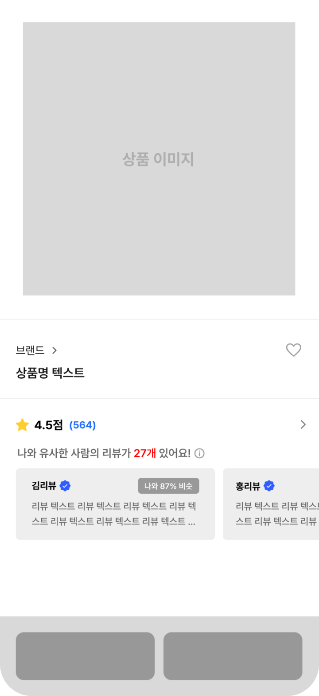
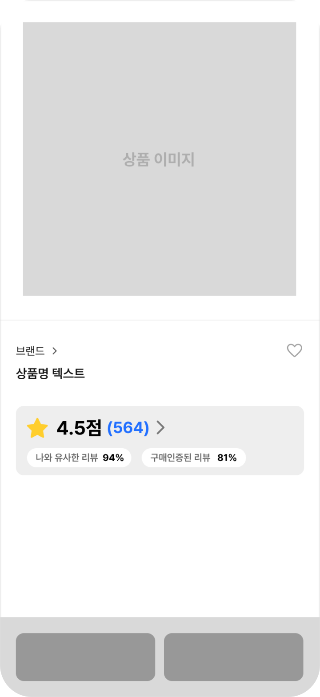
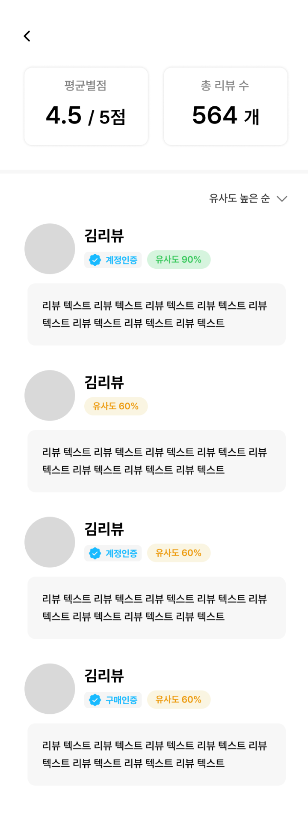
V2
사회적 단서형 와이어프레임
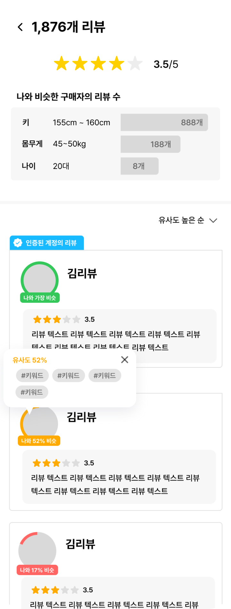
V3
주도권·투명성형 와이어프레임
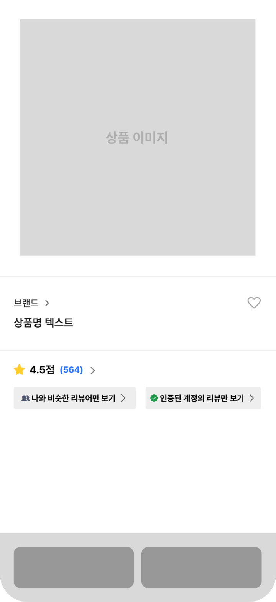
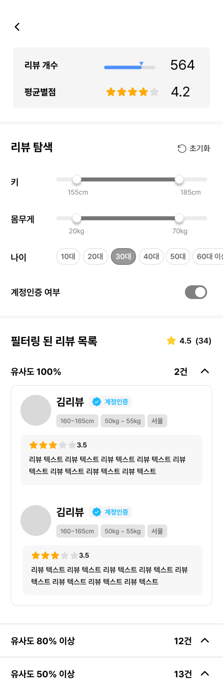
와이어프레임 조작 검증 결과
5점 척도 · 시안별 평균 · n=10
V1
정보 전달형
3.65
/ 5
정보 효율
3.65
사회적 단서
3.35
주도권·투명성
2.45
V2
사회적 단서형
4.30
/ 5
정보 효율
3.75
사회적 단서
4.30
주도권·투명성
3.55
V3
주도권·투명성형
4.40
/ 5
정보 효율
3.83
사회적 단서
3.90
주도권·투명성
4.40
정보 전달형
결과
부가 정보 축소로 인지 부하 감소 (3.9, 최고)
위계 설계 부족으로 정돈된 인상 약함 (3.4, 최저)
최소화한 화면에서 인증 배지가 오히려 두드러짐 (3.6)
개선 방향
인증 표시: 배지+텍스트
배지 아이콘만
UX 라이팅: '유사도 90%'
'나와 90% 비슷'
별점: 별 하나와 점수로 간단하게
리뷰: 카드로 나누고 읽는 순서 고정
사회적 단서형
결과
프로필 영역의 신뢰 단서 강조가 의도대로 작동 (리뷰어 정보 4.4, 인증 배지 4.2)
단서가 늘어난 만큼 인지적 부담 최대 (3.4, 최저)
유사성 기준을 더 구체화할 여지 (3.8, V3보다 낮음)
개선 방향
'인증된 계정의 리뷰' 플래그 유지
'#키워드' 유사 태그 팝업 유지
색·게이지로 나타낸 유사도 표시 삭제
가장 비슷한 리뷰어에게만 '나와 가장 비슷' 태그
주도권·투명성형
결과
필터 직접 조작으로 가장 강한 통제감 (4.6, 전체 최고)
필터 조건과 그룹화 결과로 높은 투명성 (4.2)
필터 항목(키·몸무게·나이)이 리뷰어 정보라, 사회적 단서도 함께 두드러짐 (4.0)
개선 방향
검증된 필터 중심 구조 유지
범위 슬라이더 유지, 조건만 제품에 맞게 구성
UX 라이팅: '유사도 100%'
'나와 100% 비슷함'
06 · Experimental Design
제품 유형에 따라 시각화가 신뢰에 주는 영향도 달라질까요?
검증된 세 가지 시각화 방식을 두 제품 유형에 적용해 6개 조건을 구성했어요. 구매 전 정보로 품질을 판단할 수 있는 탐색재(노트북)와, 사용 후에야 품질을 알 수 있는 경험재(밀키트)예요.
V1
정보 전달형
정보 위계로 빠르게 판단
V2
사회적 단서형
나와 비슷한 사람의 맥락
V3
주도권·투명성형
조건을 직접 골라 탐색
탐색재
노트북
구매 전 정보로 품질 판단
C2
노트북 × 정보 전달형
C4
노트북 × 사회적 단서형
C6
노트북 × 주도권·투명성형
경험재
밀키트
직접 써봐야 품질 판단
C1
밀키트 × 정보 전달형
C3
밀키트 × 사회적 단서형
C5
밀키트 × 주도권·투명성형
모든 조건을 한 사람이 경험
참가자 13명이 6개 조건을 모두 봤어요. 한 사람이 여러 조건을 직접 비교할 수 있어요.
조건 순서는 무작위
순서 효과를 줄이려고 제시 순서를 섞고 균형화했어요.
조건마다 바로 기록
Think-Aloud, 7점 설문, 스냅샷 인터뷰를 진행하고, 마지막에 심층 인터뷰로 비교했어요.
07 · Final Prototype
파일럿 결과를 반영해 최종 프로토타입을 만들었어요
정보 전달형(V1)은 파일럿 결과를 반영해 정보 구조를 간결하게 재설계했어요. 사회적 단서형(V2)과 주도권·투명성형(V3)은 검증된 구조를 유지하고, 유사성 기준만 본실험 제품에 맞게 구체화했어요. 이를 통해 6개 조건의 UI를 최종 구현했어요.
V1
정보 전달형
파일럿에서 '정돈돼 보인다'는 평가가 낮았고(3.4), 인증 배지가 오히려 두드러졌어요(3.6). 이에 리뷰를 카드 단위로 구분하고, 별점은 아이콘과 점수로 단순화했어요. 인증과 유사도는 보조 정보로 위계를 낮췄어요.
상품 상세
Wireframe
Prototype
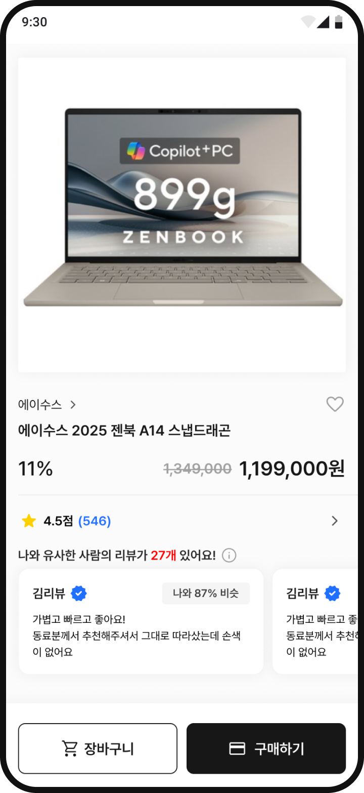
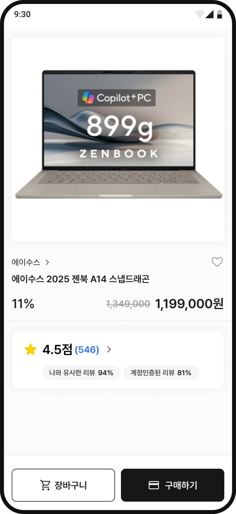
리뷰 목록
Wireframe
Prototype
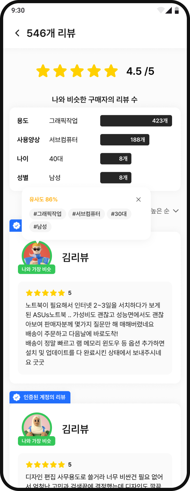
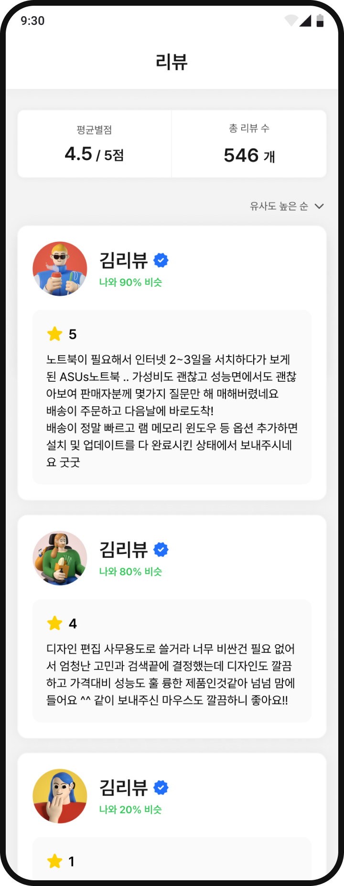
V2
사회적 단서형
파일럿에서 사회적 단서가 가장 뚜렷하게 인식돼(4.3) 기본 구조를 유지했어요. 해석이 필요한 색·게이지 유사도 표시는 제거하고, 가장 유사한 리뷰어에게만 '나와 가장 비슷' 태그를 적용했어요. 유사성 기준은 본실험 제품에 맞게 용도·사용양상 등으로 구체화했어요.
상품 상세
Wireframe
Prototype
리뷰 목록
Wireframe
Prototype
V3
주도권·투명성형
파일럿에서 주도권이 가장 높게 인식돼(4.4) 필터 중심 구조를 유지했어요. 필터 조건은 본실험 제품에 맞게 재구성하고, '유사도 100%'를 '나와 100% 비슷함'으로 바꿔 가독성을 높였어요.
상품 상세
Wireframe
Prototype
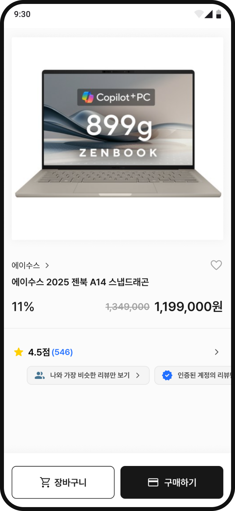
리뷰 목록
Wireframe
Prototype
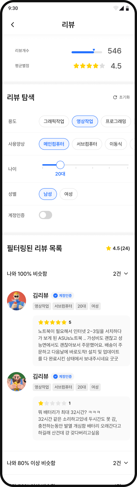
Chapter 03
실험과 분석
08 · Data Collection
정량과 정성 데이터를 함께 수집했어요
참가자 13명(20대 10명, 30대 3명)이 6개 조건을 모두 경험하는 반복측정 방식으로 진행했어요. 조건마다 Think-Aloud로 탐색 과정을 관찰하고, 7점 리커트 설문과 스냅샷 인터뷰를 진행했어요. 모든 조건이 끝난 뒤에는 심층 인터뷰로 조건 간 차이와 선호 요인을 확인했어요.
각 실험 조건마다 반복 · 6회
모든 실험을 마친 뒤
01
Think-Aloud 발화 방식
어떻게 보고 판단하는지
+
02
7점 설문
얼마나 유용하고 믿을 만한지
+
03
스냅샷 인터뷰
첫인상은 어땠는지
»
최종
심층 인터뷰
왜 그렇게 판단했는지
09 · Analysis
발화를 조건별로 분류해 신뢰를 만든 요인을 찾았어요
Think-Aloud와 인터뷰 발화를 조건별로 분류한 뒤, 설문에서 나타난 순위를 질문으로 전환해 발화를 재구조화했어요. 정량적 차이가 어떤 판단 과정에서 비롯됐는지 규명하기 위해서였어요.
조건별 발화 모음
Think-Aloud · 스냅샷 · 심층 인터뷰 발화 총 583개
C1
V1 · 밀키트
나와 유사한 90%가 무슨 의미인지 모르겠다.
P11, TA
필요한 정보만 눈에 들어와서 가시성이 좋다.
P11, 스냅샷
리뷰끼리 구분이 안 된다.
P12, 스냅샷
+ 더 많은 발화
C2
V1 · 노트북
나와 90% 비슷이라는 말이 무슨 말인지 잘 모르겠어요.
P4, TA
20% 비슷한 게 왜 나오지?
P2, TA
계정 인증된 리뷰가 좀 힘이 없는 것 같다.
P3, TA
+ 더 많은 발화
C3
V2 · 밀키트
유사한 사람의 리뷰가 27개 있다는 정보가 좋다.
P1, TA
식사 관심사가 있는 것도 보기 좋다.
P1, TA
나와 유사한 사람이 뭐죠? 좀 애매한데.
P2, TA
+ 더 많은 발화
C4
V2 · 노트북
리뷰하는 사람들의 유형이 구별되니까 신뢰가 간다.
P11, TA
나와 비슷한 리뷰 수를 그래프로 보여줘서 좋다.
P13, TA
나와 52% 비슷? 애매한 수치이다.
P12, TA
+ 더 많은 발화
C5
V3 · 밀키트
나랑 100% 비슷하구나. 이 사람이 영상 작업을 하는구나.
P4, TA
나와 가장 비슷한 리뷰 보기가 뭐지.
P3, TA
게이지로 차는 게 조금 더 직관적이다.
P1, TA
+ 더 많은 발화
C6
V3 · 노트북
리뷰 개수, 평균 별점이 눈에 들어오고요.
P4, TA
리뷰 빠르게 보는 거 없어진 게 너무 아쉬워요.
P1, TA
나랑 100% 비슷한데 나랑 100% 다른 것 같아.
P3, TA
+ 더 많은 발화
발화에서 찾은 신뢰 요인
01
구체적인 유사성 기준
02
유사도 높은 리뷰 우선 노출
03
인증 배지와 리뷰어 프로필
Chapter 04
결과와 인사이트
10 · What
사회적 단서형 화면의 리뷰가 가장 유용하고, 믿을 만하고, 사고 싶게 느껴졌어요
인지된 유용성, 신뢰도, 구매 의도 모두에서 ‘정보 전달형(V1) < 주도권·투명성형(V3) < 사회적 단서형(V2)’의 순위가 일관되게 나타났어요.
전체
탐색재 · 노트북
경험재 · 밀키트
V1 정보 전달형
V3 주도권·투명성형
V2 사회적 단서형
7점 리커트 척도(막대 기준선 1점) · 시각화 방식별 평균 · n=13
3.87
4.49
5.05
인지된 유용성
4.44
4.78
5.01
신뢰도
3.42
3.74
4.37
구매 의도
제품 유형별 순위
인지된 유용성
신뢰도
구매 의도
탐색재 · 노트북
V1 < V3 < V2
V1 < V3 < V2
V1 < V3 < V2
경험재 · 밀키트
V1 < V3 < V2
V3 < V1 < V2
V1 < V2 = V3
경험재는 지표마다 순위가 달랐어요
11 · Why
'나와 비슷하다'는 단서가 보일 때 리뷰를 신뢰했어요
두 유형씩 비교해 점수 차이와 그 원인이 되는 발화를 함께 분석했어요. 정량 데이터로 차이의 크기를, 정성 데이터로 차이의 원인을 확인했어요.
V2 사회적 단서형
vs
V1 정보 전달형
유사성 단서가 구체적일수록 리뷰를 더 신뢰했어요
인지된 유용성
5.05
vs 3.87
신뢰도
5.01
vs 4.44
구매 의도
4.37
vs 3.42
V2 사회적 단서형의 발화
“유사한 리뷰가 먼저 보여서 자연스럽게 그 쪽으로 스크롤하게 된다.”
P13, TA
“거주 인원, 식사량 같은 구체적 기준이 있어서 납득된다.”
P1, 스냅샷
“나랑 비슷한 사람의 구분이 뚜렷해서 믿음직스럽다.”
P12, 심층 인터뷰
V1 정보 전달형의 발화
“뭐가 더 유용한 정보인지 구분이 안 된다. 다 비슷하게 보이니까 업체에서 돈 주고 쓸 수 있을 것 같은 느낌”
P1, 심층 인터뷰
“나와 몇 퍼센트 비슷한지는 신뢰하기 어렵다. 기준이 뭘지 잘 모르겠다.”
P6, 스냅샷
“설명이 부족해서 신뢰도가 떨어졌다.”
P10, 심층 인터뷰
V2 사회적 단서형
vs
V3 주도권·투명성형
필터를 직접 조작하는 부담이 구매 의도를 낮췄어요
인지된 유용성
5.05
vs 4.49
신뢰도
5.01
vs 4.78
구매 의도
4.37
vs 3.74
V2 사회적 단서형의 발화
“전체 통계를 먼저 보여주고 리뷰를 보여주는 순서가 좋았다”
P5, 심층 인터뷰
“맨 위에 구매 목적과 행태 등 유사한 항목을 나에게 맞게 제공해주는 부분에서 신뢰가 많이 간다.”
P2, 스냅샷
V3 주도권·투명성형의 발화
“필터가 내 계정의 기본 설정값이 자동으로 입력되는 것이 아니라면 부담감이 생길 것 같다.”
P13, TA
“리뷰는 스크롤하면서 보는 것이 편한데 탭으로 묶여있으니 불편하다.”
P13, TA
12 · When
꼼꼼히 따져 사는 제품일수록 필터 기능이 신뢰를 높였어요
주도권·투명성형(V3)의 필터는 구매 목적이 명확한 탐색재에서는 신뢰 요인으로 작용했지만, 주관적 평가가 많은 경험재에서는 과도한 선택지로 인식돼 피로감을 유발했어요.
탐색재 · 노트북
vs
경험재 · 밀키트
노트북은 필터로 꼼꼼히 걸러 보고, 밀키트는 적은 정보로 빠르게 골랐어요
노트북 · 신뢰도
V3 4.92
vs V1 4.18
밀키트 · 신뢰도
V3 4.64
vs V1 4.69
탐색재 · 노트북의 발화
“전자제품은 자세하게 필터가 있으면 구매에 신중하게 참고하기 좋을 듯”
P9, 심층 인터뷰
“노트북은 비싸니까 전문적으로 리뷰했는지 광고인지 꼼꼼하게 본다.”
P6, TA
경험재 · 밀키트의 발화
“음식은 주관적인 평가가 많아서 나랑 비슷한 사람을 특정하기 어려울 것 같다.”
P5, 심층 인터뷰
“가격이 저렴해서 사람들이 대체로 맛있다고 평가를 했네 생각하고 그냥 넘어갈 것 같아요.”
P4, TA
13 · Insights
리뷰의 신뢰는 무엇을 보여주느냐보다, 어떻게 보여주느냐에서 달라졌어요
RQ1
온라인 리뷰의 시각화가 사용자에게 어떤 영향을 미치는가?
통합적 시각화는 신뢰 경험에 직접적 영향을 줘요
리뷰를 구조화하는 방식만으로도 인지된 유용성, 신뢰도, 구매 의도 전반에 차이가 나타났어요.
RQ2
사용자가 리뷰 정보를 '신뢰할 수 있다'고 경험하게 만드는 디자인 특성은 무엇인가?
사회적 맥락 단서가 가장 강력한 신뢰 요인이에요
사회적 단서형은 '거주 인원, 식사량'처럼 구체적인 유사성 단서를 제시하고 유사도가 높은 리뷰를 우선 배치해, 탐색에 드는 인지적 노력을 줄였어요.
RQ3
제품 속성 유형에 따라 시각화된 리뷰 정보가 신뢰 판단에 미치는 영향은 어떻게 달라지는가?
제품 유형에 따라 적정 사용자 주도권이 달라요
제품의 실패 비용과 정보 탐색 동기에 따라 사용자 주도권의 수준을 달리 설계해야 해요.
14 · Design Guideline
결과를 바탕으로, 리뷰 신뢰를 높이는 설계 가이드라인을 정리했어요
실험 결과를 바탕으로 리뷰 인터페이스 설계에 적용할 수 있는 네 가지 가이드라인을 도출했어요.
01
비슷한 점을 구체적으로 보여줘요
'86% 비슷' 같은 수치만으로는 판단 근거가 부족해요. 어떤 속성이 유사한지 태그로 함께 제시해요.
유사도 86%
✕
#그래픽작업
#서브컴퓨터
#30대
#남성
근거 · 11 Why
02
나와 비슷한 사람의 리뷰를 상단에 띄워요
유사도가 높은 리뷰를 우선 노출하면, 별도의 필터 조작 없이 참고할 리뷰를 바로 찾을 수 있어요.
나와 비슷한 구매자의 리뷰 수
용도
423개
사용양상
188개
나이
8개
나와 가장 비슷
김리뷰
근거 · 11 Why
03
제품에 따라 필터와 요약을 나눠 써요
노트북처럼 신중하게 비교하는 탐색재에는 세부 필터를, 밀키트처럼 가볍게 구매하는 경험재에는 요약 정보를 제공해요.
노트북 · 필터
용도
그래픽
영상작업
사용양상
메인
이동식
나이
밀키트 · 요약
나와 유사한 사람의 리뷰가 27개 있어요!
김리뷰 · 나와 87% 비슷
양이 넉넉해서 좋아요
근거 · 12 When
04
사용자가 쓰는 말로 쉽게 써요
'유사도 100%' 같은 시스템 중심 표현 대신, '나와 100% 비슷함'처럼 사용자 관점의 표현을 사용해요.
나와 100% 비슷함
김리뷰
노트북이 필요해서 알아보다가…
근거 · 07 Final Prototype
15 · Limitations
한계와 다음 단계
한계
다음 단계
표본
20–30대 참가자 13명을 편의 표집해, 결과를 다양한 사용자 집단으로 일반화하기에는 한계가 있어요. 또한 통계적 유의성 검정 없이 평균값으로 비교해, 차이의 크기를 일반화하기에는 한계가 있어요.
더 넓은 연령대와 충분한 표본으로 같은 경향이 나타나는지 확인하기
제품군
탐색재(노트북)와 경험재(밀키트) 두 제품만 다뤄, 다른 제품군에서도 같은 경향이 나타나는지는 확인하지 못했어요.
건강기능식품, 금융상품처럼 신뢰 불확실성이 높은 제품군으로 넓혀 검증하기
측정 시점
단일 세션에서 즉각적인 반응만 측정해, 반복 사용을 통한 장기적인 신뢰 형성 과정은 파악하지 못했어요.
시간을 두고 여러 번 사용하게 하는 종단 설계로 장기적인 신뢰 형성 살펴보기
Next Project
02
TA:GO, 시니어를 위한 합승형 택시 호출 서비스
앱이 낯선 시니어가 가족의 도움 없이 혼자 택시를 부를 수 있으려면, 어떤 경험이 필요할까요?